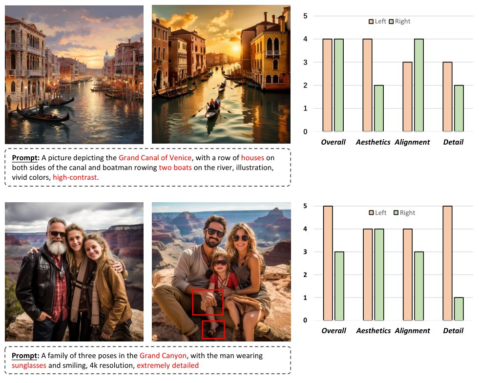
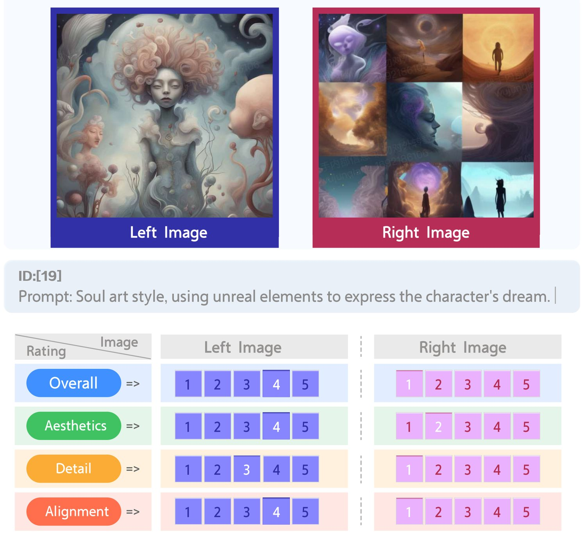
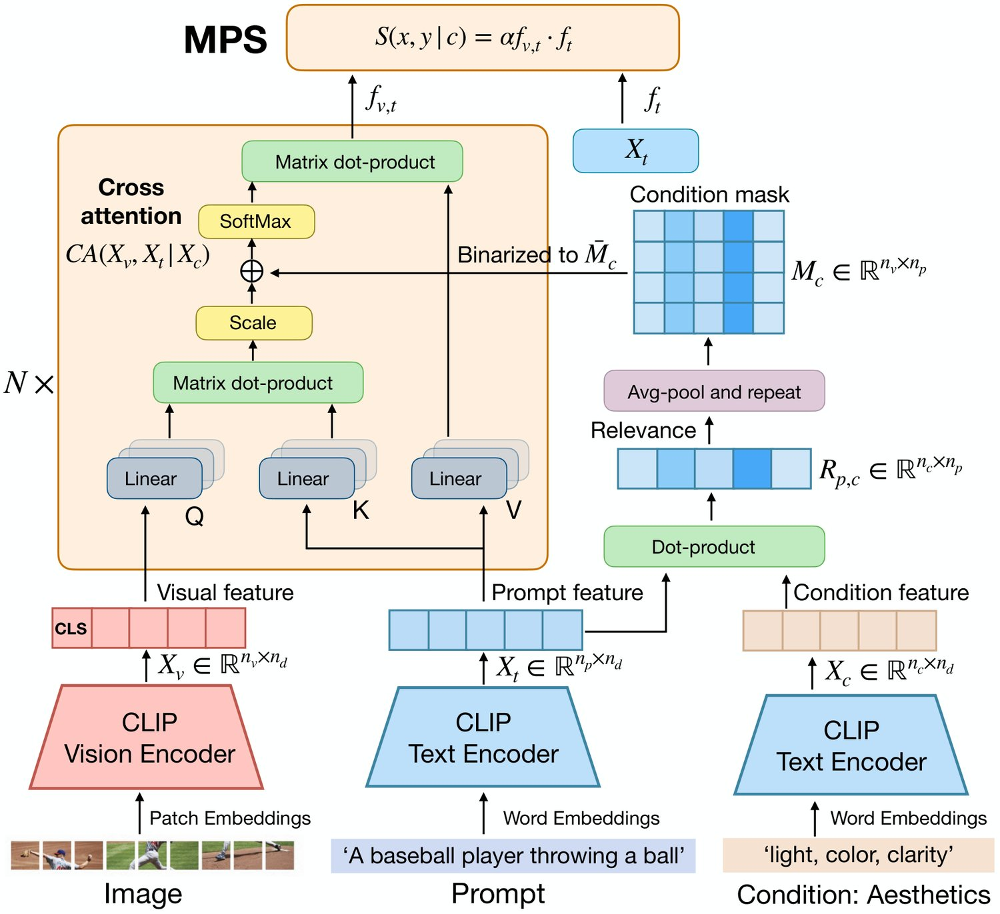
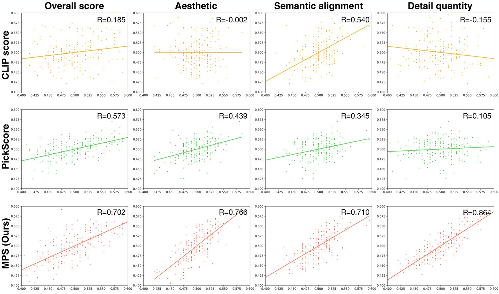
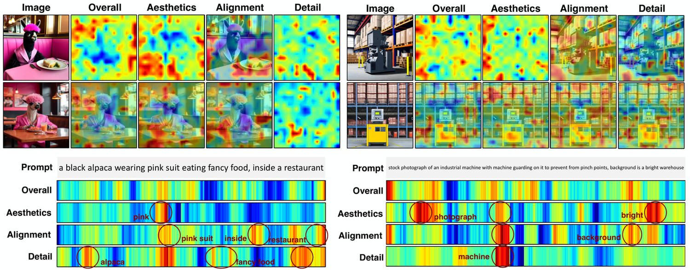

Learning Multi-dimensional Human Preference for Text-to-Image Generation
Current metrics for text-to-image models typically rely on statistical metrics which inadequately represent the real preference of humans. Although recent work attempts to learn these preferences via human annotated images, they reduce the rich tapestry of human preference to a single overall score. However, the preference results vary when humans evaluate images with different aspects. Therefore, to learn the multi-dimensional human preferences, we propose the Multi-dimensional Preference Score (MPS), the first multi-dimensional preference scoring model for the evaluation of text-to-image models. The MPS introduces the preference condition module upon CLIP model to learn these diverse preferences. It is trained based on our Multi-dimensional Human Preference (MHP) Dataset, which comprises 918,315 human preference choices across four dimensions (i.e., aesthetics, semantic alignment, detail quality and overall assessment) on 607,541 images. The images are generated by a wide range of latest text-to-image models. The MPS outperforms existing scoring methods across 3 datasets in 4 dimensions, enabling it a promising metric for evaluating and improving text-to-image generation. The model and dataset will be made publicly available to facilitate future research. Project page: https://wangbohan97.github.io/MPS/.
“There are a thousand Hamlets in a thousand people’s eyes.”
–Vissarion Belinsky
“一千个人眼中有一千个哈姆雷特。”——Vissarion Belinsky
Text-to-image generative models [14, 10, 15] have achieved remarkable advancements in recent years, and these models have the capability to generate high-fidelity and contextually relevant images based on textual descriptions (i.e., prompts). To evaluate the quality of generated images, several evaluation metrics are proposed, including Inception Score (IS) [16], Fréchet Inception Distance (FID) [5], and CLIP Score [12]. However, these statistical metrics fall short of aligning with human perceptual preferences. For instance, metrics like the IS or the FID, although indicative of image quality to some extent, might not necessarily reflect how a human observer would rate the image in terms of fidelity, coherence, or aesthetic appeal.
文本到图像生成模型 [14, 10, 15] 近年来取得了显著进展，能够根据文本描述（即提示词）生成高保真且与语境相关的图像。为评价生成图像的质量，研究者提出了若干评价指标，包括 Inception Score（IS）[16]、Fréchet Inception Distance（FID）[5] 与 CLIP Score [12]。然而，这些统计指标难以与人类的感知偏好相对齐。以 IS 或 FID 为例，它们虽在一定程度上反映图像质量，却未必能体现人类观察者在保真度、连贯性或美感上的评判。

图 1：人类从不同视角评价图像时，其偏好也随之变化。具体而言，观察上排图像时，左侧图像在美感上更为突出，但与右侧图像相比在语义对齐上有所不足（例如河面上的两条船）。在下排中，两幅图像都具有美感，但右侧图像受细节质量不佳所累（如红色边界框标出的畸变手与脚）。
表 1：文本到图像模型质量数据库对比。我们的多维人类偏好（MHP）数据集在提示词收集、图像生成与偏好标注三方面相较已有工作取得显著进展，并且在生成图像数量与偏好标注数量上均为规模最大的数据集。需注意，Diffusion DB 仅包含生成图像，缺少人类偏好标注。此外，KOLORS 是来自内部设计师平台的数据集，提供了 10w 条提示词。
| Dataset | Prompt collection | Image Generation | Preference annotation | |||
| Source | Annotation | Source | Number | Rating | Dimension | |
| DiffusionDB [19] | DiffusionDB | Diffusion (1) | 1,819,808 | 0 | None | |
| AGIQA-1K [24] | DiffusionDB | Diffusion (2) | 1,080 | 23,760 | Overall | |
| PickScore [6] | Web Application | Diffusion (3) | 583,747 | 583,747 | Overall | |
| ImageReward [22] | DiffusionDB | Auto Regressive; Diffusion (6) | 136,892 | 410,676 | Overall | |
| HPS [21] | DiffusionDB | Diffusion (1) | 98,807 | 98,807 | Overall | |
| HPS v2 [20] | DiffusionDB, COCO | GAN; Auto Regressive; Diffusion, COCO (9) | 430,060 | 798,090 | Overall | |
| AGIQA-3K [7] | DiffusionDB | GAN; Auto Regressive; Diffusion (6) | 2,982 | 125,244 | Overall; Alignment | |
| MHP | DiffusionDB, PromptHero, KOLORS, GPT4 | GAN; Auto Regressive; Diffusion (9) | 607,541 | 918,315 | Aesthetics, Detail, Alignment, Overall | |
|---|---|---|---|---|---|---|
Contrary to these statistical metrics, several approaches [20, 6, 22, 21, 24] turn towards human-centric evaluations, where generated images are manually annotated according to human preferences. Subsequently, models are trained with these annotations to predict preference scores. However, these approaches typically utilize a single score to summarize all human preferences, overlooking the multi-dimensionality of human preferences. As Fig. 1 shows, the preference results differ when humans evaluate images from various perspectives. Therefore, using a single-dimensional evaluation method is insufficient in capturing the broad range of personalized needs and preferences. To ensure a comprehensive evaluation of text-to-image synthesis outputs, it is crucial to learn and utilize multi-dimensional human preferences.
与这些统计指标不同，若干方法 [20, 6, 22, 21, 24] 转向以人为中心的评价，即由人工按照人类偏好对生成图像进行标注，再用这些标注训练模型以预测偏好分数。然而，这类方法通常用单一分数概括全部人类偏好，忽视了人类偏好的多维性。如图 1 所示，人类从不同视角评价图像时，偏好结果并不相同。因此，单维评价方法不足以刻画广泛的个性化需求与偏好。要对文本到图像合成结果做出全面评价，学习并利用多维人类偏好至关重要。
To learn the multi-dimensional human preferences, we propose the Multi-dimensional Human Preference (MHP) dataset. Compared to prior efforts [21, 6, 22, 20], the MHP dataset offers significant enhancements in prompts collection, image generation, and preference annotation. For the prompt collection, previous work [21, 6, 22] directly utilizes existing open-source datasets (e.g., Diffusion DB [19]) or datasets collated from the internet [6], overlooking the potential data bias of long-tail distribution. To this end, based on the categories schema of Parti [23], we annotate the collected prompts into 7 category labels (e.g., characters, scenes, objects, animals, etc.). For the underrepresented tail categories, we employ Large Language Models (LLMs) (e.g., GPT-4 [9]) to generate additional prompts. This process results in a balanced prompt collection across various categories, which is used for later image generation. For image generation, following previous work [20, 7], we not only utilize existing open-source Diffusion models and their variants, but also employ GANs and auto-regressive models to generate images. Consequently, we generate a dataset of 607,541 images, which are further used to create 918,315 pairwise comparisons of images for preference annotation. The quantity of image data constitutes the largest dataset of its kind. For the annotation of human preferences, contrary to the single annotation of existing work [21, 20, 6, 24], we consider a broader range of dimensions for human preferences and employ human annotators to label each image pair across four dimensions, including aesthetics, detail quality, semantic alignment, and overall score.
为学习多维人类偏好，我们提出多维人类偏好（MHP）数据集。相较已有工作 [21, 6, 22, 20]，MHP 数据集在提示词收集、图像生成与偏好标注三方面均有显著改进。在提示词收集方面，已有工作 [21, 6, 22] 直接使用现有开源数据集（如 Diffusion DB [19]）或从互联网整理的数据集 [6]，忽视了长尾分布可能带来的数据偏差。为此，我们依据 Parti [23] 的类别体系，将收集到的提示词标注为 7 个类别标签（如人物、场景、物体、动物等），并利用大语言模型（LLM）（如 GPT-4 [9]）为样本不足的尾部类别补充生成提示词，最终得到类别均衡的提示词集合，用于后续图像生成。在图像生成方面，沿用已有工作 [20, 7]，我们不仅使用现有开源扩散模型及其变体，还采用生成对抗网络与自回归模型生成图像，共得到 607,541 张图像，并进一步构造 918,315 组图像对用于偏好标注，其图像数据规模在同类数据集中最大。在人类偏好标注方面，与已有工作 [21, 20, 6, 24] 的单一标注不同，我们考虑更广的偏好维度，由标注人员从美学、细节质量、语义对齐与总体分数四个维度对每组图像对进行标注。
To learn human preferences, existing methods employ the pre-trained vision-language models (e.g., CLIP [11], BLIP [8]) to extract features from images and prompts independently, followed by computing the similarity between them. These methods then fine-tune the network utilizing the collected preference data. For learning the multi-dimensional preferences, a straightforward strategy is to train separate models for different preferences. However, such a simple strategy requires data re-collection and model re-training for the new preference. Moreover, due to the potential bias in single-preference data, a model trained under one preference condition often exhibits diminished performance when evaluated against other preferences. Therefore, we propose the Multi-dimensional Preference Score (MPS), a unified model capable of predicting scores under various preference conditions. Specifically, a certain preference is denoted by a series of descriptive words. For instance, the ‘aesthetic’ condition is decomposed into words such as ‘light’, ‘color’, and ‘clarity’ to describe the attributes of this condition. These attribute words are used to compute similarities with the prompt, resulting in a similarity matrix that reflects the correspondence between words in the prompt and the specified condition. On the other hand, features from images and text are extracted using a pre-trained vision-language model. Subsequently, two modalities are fused through a multimodal cross-attention layer. The similarity matrix serves as a mask merged into the cross-attention layer, which ensures that the text only related to the condition is attended to by the visual modality. Then the fused features are used to predict the preference scores. We evaluate our MPS model on both the existing human preference datasets (i.e., ImageReward [22] and HPS v2 [20]) and our MHP dataset. The experimental results indicate that our MPS model surpasses existing benchmarks in evaluating both overall and multi-dimensional preferences, establishing a new state-of-the-art in comparison with related work.
已有方法在学习人类偏好时，通常采用预训练视觉-语言模型（如 CLIP [11]、BLIP [8]）分别提取图像与提示词的特征，再计算二者之间的相似度，随后利用收集到的偏好数据微调网络。要学习多维偏好，一种直接的策略是为不同偏好分别训练模型。然而，这种简单策略在引入新偏好时需要重新采集数据、重新训练模型；并且，由于单一偏好数据可能存在偏差，在某一偏好条件下训练的模型在其他偏好上评估时往往性能下降。为此，我们提出多维偏好分数（MPS），一个能够在不同偏好条件下预测分数的统一模型。具体而言，某一偏好由一组描述性词语表示，例如“美学”条件被分解为“光线”“色彩”“清晰度”等词，用以刻画该条件下的属性。这些属性词与提示词计算相似度，得到一个反映提示词中各词与指定条件对应关系的相似度矩阵。另一方面，图像与文本特征由预训练视觉-语言模型提取，两种模态通过多模态交叉注意力层融合；相似度矩阵作为掩码融入交叉注意力层，使视觉模态仅关注与条件相关的文本，融合后的特征再用于预测偏好分数。我们在已有的人类偏好数据集（即 ImageReward [22] 与 HPS v2 [20]）以及我们的 MHP 数据集上评估 MPS 模型。实验结果表明，MPS 在总体偏好与多维偏好的评价上均超越已有基准，相较相关工作确立了新的最优水平。
In summary, our main contributions are as follows:
综上，本文的主要贡献如下：
We introduce the Multi-dimensional Human Preference (MHP) datasets for evaluating text-to-image models. The MHP contains balanced prompts and the largest collection of images with multi-dimensional annotations. Based on MHP, we propose a standard test benchmark to evaluate existing text-to-image synthesis models.
• 我们提出用于评价文本到图像模型的多维人类偏好（MHP）数据集。MHP 包含均衡的提示词，以及规模最大、具备多维标注的图像集合。基于 MHP，我们提出一套标准测试基准，用以评估现有的文本到图像合成模型。
We propose the MPS model, which learns multi-dimensional human preferences and evaluates the scores of generated images under different preference conditions.
• 我们提出 MPS 模型，该模型学习多维人类偏好，并在不同偏好条件下评价生成图像的分数。
Our MPS exhibits superior performance compared to existing methods across three datasets in predicting the overall preferences and multi-dimensional preferences.
• 在三个数据集上，我们的 MPS 在总体偏好与多维偏好的预测上均优于已有方法。
The text-to-image task aims to synthesize realistic images from natural language description (i.e., prompt). Several work attempts to tackle this problem, including GANs [25, 4], auto-regressive [2, 3, 23] and diffusion models [14, 10, 15]. Among the previously mentioned methods, diffusion models gain significant attention for their exceptional performance. These methods are principally divided into two categories: latent-based and pixel-based approaches. The Latent Diffusion Model (LDM) [14] is notable as the first to introduce a latent-based diffusion model, leveraging an auto-encoder to map images into a latent space where the diffusion process is executed. Following this, Stable Diffusion has notably propelled the field forward by open-sourcing SD series [10]. In contrast, DALL·E 2 [13] and Imagen [15] are predicated on pixel-based diffusion models. Besides, the Imagen [15] integrates the large language model T5 XXL to achieve a text-to-image super-resolution diffusion model capable of producing highly realistic images. Current text-to-image models excel in creating high-quality images but often miss aligning with human preferences in real-world applications. For evaluating text-to-image models, several evaluation metrics are proposed to evaluate the quality of generated images, including Inception Score (IS) [16], Fréchet Inception Distance (FID) [5], and CLIP Score [12]. However, these statistical metrics fall short of aligning with human perceptual preferences. Our MPS provides a comprehensive evaluation for text-to-image generations, facilitating the evaluation of alignment with multi-dimensional human preference.
文本到图像任务旨在根据自然语言描述（即提示词）合成逼真的图像。已有若干工作尝试解决该问题，包括生成对抗网络 [25, 4]、自回归模型 [2, 3, 23] 与扩散模型 [14, 10, 15]。在上述方法中，扩散模型凭借出色的性能而备受关注，主要分为基于潜空间与基于像素空间两类。潜扩散模型（LDM）[14] 首次引入基于潜空间的扩散模型，利用自编码器将图像映射到潜空间，并在其中执行扩散过程。此后，Stable Diffusion 通过开源 SD 系列 [10] 显著推动了该领域的发展。相比之下，DALL·E 2 [13] 与 Imagen [15] 基于像素空间的扩散模型；此外，Imagen [15] 结合大语言模型 T5 XXL，实现了能够生成高度逼真图像的文本到图像超分辨率扩散模型。当前的文本到图像模型擅长生成高质量图像，但在实际应用中往往难以与人类偏好相对齐。在评价方面，已有若干指标被用于评估生成图像的质量，包括 Inception Score（IS）[16]、Fréchet Inception Distance（FID）[5] 与 CLIP Score [12]，但这些统计指标同样难以与人类感知偏好相对齐。我们的 MPS 为文本到图像生成提供了全面评价，便于衡量其与多维人类偏好的契合程度。
Currently, several studies attempt to collect and learn human preferences for the evaluation of text-to-image generation. They use the collected data to fine-tune visual-language models (VLMs) to align with human selections.
目前已有若干研究尝试收集并学习人类偏好，用于评价文本到图像生成，并利用所采集的数据微调视觉-语言模型（VLM），使其与人类的选择相对齐。
HPS [21] introduces the HPD dataset of human preference choices. The images are generated solely using the Stable Diffusion model with prompts from Diffusion DB. They train HPS model utilizing the human preference annotations of HPD to align it with human preference. Subsequently, they fine-tune the Stable Diffusion model under the guidance of HPS, leading to better generated images that are more preferred by human users. However, HPS is limited to a single generation model and a relatively small number of images. Furthermore, HPS v2 [20] introduces a larger dataset, employing 8 generative models, including Diffusion models, GANs, and Auto regressive models, and also incorporating captions from the COCO dataset. However, both HPS and HPS v2 primarily focus on overall human preferences, not considering the diversity of human tastes.
HPS [21] 提出了包含人类偏好选择的人类偏好数据集 HPD，其图像仅由 Stable Diffusion 模型根据 Diffusion DB 的提示词生成；该工作利用 HPD 的人类偏好标注训练 HPS 模型，使其与人类偏好相对齐，随后在 HPS 的指导下微调 Stable Diffusion，得到更受人类用户偏好的生成图像。然而，HPS 仅局限于单一生成模型，图像数量也相对较少。此后，HPS v2 [20] 引入了规模更大的数据集，采用 8 种生成模型，包括扩散模型、生成对抗网络与自回归模型，并纳入 COCO 数据集的描述文本。不过，HPS 与 HPS v2 都主要关注总体人类偏好，未考虑人类品味的多样性。
图 2：提示词收集。初步收集的提示词在各类别上呈长尾分布。经 GPT 扩充后，我们得到一个相对均衡的提示词数据集，共包含 66,389 条提示词。
PickScore [6] proposes a web application designed to collect prompts and human preference annotations from real users. Unlike previous methods adopting prompts from existing datasets (e.g. DiffusionDB), the prompts of PickScore are directly generated by actual users. The dataset of PickScore is sizeable, however, it focuses only on the overall preferences, lacking detailed annotations for multi-dimension preferences.
PickScore [6] 提出了一个 Web 应用，用于从真实用户处收集提示词与人类偏好标注。与采用现有数据集（如 DiffusionDB）提示词的已有方法不同，PickScore 的提示词由真实用户直接给出。该数据集规模可观，但仅关注总体偏好，缺少多维偏好的细粒度标注。
ImageReward [22] employs four types of Diffusion models along with an auto-regression-based model. Their annotation of generated images is more detailed with scoring ranging from 0 to 7. Beyond overall satisfaction, they also consider annotations for alignment and fidelity. However, they merge alignment and fidelity into a single overall score, inadequately capturing the multi-dimensional dimensions of human preferences.
ImageReward [22] 使用 4 种扩散模型以及一个基于自回归的模型，其标注更为细致，分数范围为 0 到 7；除总体满意度外，还考虑对齐度与保真度的标注。然而，该方法把对齐度与保真度合并为单一的总体分数，难以充分刻画人类偏好的多个维度。
AGIQA-1k [24] and AGIQA-3k [7] utilize a range of generative models, including Diffusion, GAN, and Auto regressive models, to produce images. They consider both overall and alignment preferences. However, their dataset size is considerably smaller compared to existing work.
AGIQA-1k [24] 与 AGIQA-3k [7] 使用包括扩散模型、生成对抗网络与自回归模型在内的多种生成模型生成图像，同时考虑总体偏好与对齐偏好，但其数据规模相较已有工作明显偏小。
Our MHP dataset represents an advancement over previous work in terms of prompt collection, image generation, and preference annotation.
我们的 MHP 数据集在提示词收集、图像生成与偏好标注三方面均较已有工作有所推进。
表 2：图像生成。MHP 数据集的图像来源包括由 9 个文本到图像生成模型生成的图像。需注意，KOLORS 是内部设计师平台使用的内部模型。
| Source | Type | Images | Split |
| KOLORS | Diffusion | 211,707 | Train and test |
| DeepFloyd IF | Diffusion | 27,311 | Train and test |
| Stable Diffusion XL | Diffusion | 89,176 | Train and test |
| Openjourney v4 | Diffusion | 133,875 | Train and test |
| Stable Diffusion v2.0 | Diffusion | 84,590 | Train and test |
| Stable Diffusion v1.5 | Diffusion | 56,882 | Train and test |
| VQGAN+CLIP | GAN | 1,000 | Test |
| LAFITE | GAN | 1,000 | Test |
| CogView2 | Autoregressive | 2,000 | Test |
Our prompts are carefully collected from several databases, including PromptHero[1], DiffusionDB[19] and KOLORS-dataset (an internal dataset derived from in-house platform for designers). Following the category schema from Parti[23], we further merge some categories, and finally determine 7 categories as illustrated in Fig. 2. The definitions and merging rules are detailed in the supplementary material. Based on these defined categories, we employ human annotators to label the initially collected 59,396 prompts. Additionally, the annotators are also required to filter out anomalous prompts, such as those that are incoherent, incomprehensible, or have punctuation errors. After annotation, we obtain 52,057 prompts. The distribution of these prompts, based on their categories, is depicted in Fig. 2. As the figure shows, the initially collected prompts exhibit a long-tail distribution across categories. Such category imbalances might lead to imbalanced generated images. Consequently, the human preferences learned from these imbalanced data could also be biased. As a result, we further expand our prompts.
我们的提示词精心采集自多个数据库，包括 PromptHero[1]、DiffusionDB[19] 与 KOLORS-dataset（来自内部设计师平台的数据集）。依据 Parti[23] 的类别体系，我们进一步合并部分类别，最终确定 7 个类别，如图 2 所示；类别定义与合并规则详见补充材料。基于这些类别，我们由标注人员对初步收集的 59,396 条提示词进行标注，并要求其剔除异常提示词，如语义不连贯、难以理解或存在标点错误的条目。标注完成后得到 52,057 条提示词。这些提示词的类别分布如图 2 所示，可见初步收集的提示词在类别上呈长尾分布；类别不均衡可能导致生成图像不均衡，从中习得的人类偏好也可能存在偏差。因此，我们进一步扩充提示词。
By employing the GPT-4[9], we obtain additional prompts to supplement categories with initially low quantities (see supplementary materials for more examples of the generated prompts). These generated prompts are further refined by annotators to remove those incoherent or incomprehensible items. As shown in Figure 2, after supplementation, we obtain 66,389 prompts and the distribution of prompts across categories is balanced. These balanced prompts help us in learning more representative human preferences.
我们利用 GPT-4[9] 为初始数量偏少的类别补充提示词（生成示例见补充材料），并由标注人员对这些生成的提示词作进一步筛选，剔除不连贯或难以理解的条目。如图 2 所示，补充后共得到 66,389 条提示词，各类别分布趋于均衡。这些均衡的提示词有助于我们学习更具代表性的人类偏好。

图 3：标注界面。标注人员需从美学、细节质量（detail）、语义对齐（alignment）与总体分数（overall）四个维度评价给定图像对的偏好。标注分数为 1 到 5 的离散值，随后被归一化为 0 或 1 的布尔值；当分数相同时，归一化结果取 0.5。
As shown in Table 2, we utilize Diffusion models (such as the Stable Diffusion series and DeepFloyd IF), GANs, and AutoRegressive models to generate images based on the obtained prompts. Each model produces 2-4 images for every single prompt. The generated images come from a variety of model architectures, with various image resolution scales (e.g., , , ), and aspect ratios (e.g., 1:1, 16:9). This diversity ensures a comprehensive representation of the text-to-image models’ generalization capability.
如表 2 所示，我们使用扩散模型（如 Stable Diffusion 系列与 DeepFloyd IF）、生成对抗网络以及自回归模型，基于所得提示词生成图像；每个模型对每条提示词生成 2～4 张图像。生成图像来自多种模型架构，涵盖不同的图像分辨率尺度（如 、、）与宽高比（如 1:1、16:9）。这种多样性保证了对文本到图像模型泛化能力的全面刻画。
Images generated from the same prompt are paired together for comparison. To enhance the representativeness of these image pairs, the construction of image pairs sources not only from images generated by different models but also includes those produced by the same model using different random seeds. Based on these contrastive image pairs, we employ human annotators to evaluate the image pairs with our annotation interface as shown in Fig. 3. The annotators are required to evaluate the quality of the generated image pairs based on three sub-dimensions (i.e., aesthetics, text-image consistency, and detail) and one overall dimension (i.e., overall score). These four dimensions are defined as follows:
由同一提示词生成的图像被两两配对以进行比较。为使图像对更具代表性，配对来源不仅包括不同模型生成的图像，也包括同一模型在不同随机种子下生成的图像。基于这些对比图像对，我们由标注人员使用图 3 所示的标注界面进行评价：标注人员需从三个子维度（即美学、图文一致性与细节）和一个总体维度（即总体分数）评价生成图像对的质量。四个维度的定义如下：
Aesthetics: annotators should measure the aesthetic quality of a generated image pair in terms of composition, light contrast, color matching, clarity, tone, style, depth of field, atmosphere, and artistry of the image.
1. 美学：标注人员需从构图、明暗对比、色彩搭配、清晰度、色调、风格、景深、氛围与艺术性等方面衡量生成图像对的美学质量。
Detail quality: annotators should focus on the delicacy of image details such as texture, hair, and light and shadow, whether there is distortion in the face, hands, and limbs of the characters, whether there is a blurry overall view, object distortion, severe deformation.
2. 细节质量：标注人员需关注图像细节的精细程度，如纹理、毛发、光影，以及人物的面部、手部与四肢是否存在畸变，整体是否模糊、物体是否扭曲或严重变形。
Semantic alignment: annotators should evaluate the semantic consistency of the generated images with the prompts, and the evaluation includes measuring whether the generated image accurately matches the textual description (e.g., quantity, attributes, location, positional relationships) and whether there is missing or redundant content in the generated image.
3. 语义对齐：标注人员需评价生成图像与提示词的语义一致性，包括衡量生成图像是否准确匹配文本描述（如数量、属性、位置、位置关系），以及生成图像是否存在内容缺失或冗余。
Overall assessment: Based on the combination of above aspects and subjective preferences, the annotators assess the quality of each generated image from a holistic perspective.
4. 总体评估：综合上述各方面与主观偏好，标注人员从整体角度评估每张生成图像的质量。
The annotators rate all these scores of each image in the pair into five distinct levels (from 1 to 5), and the scores are eventually normalized to . The image annotation is completed by a crowdsourced team of 210 members. Before the official annotation, each member needs to perform pre-annotation, where any member whose annotation results have a high degree of inconsistency with that of the majority is disqualified. Eventually, 198 members participate in the annotation of generated image pairs, of which 170 members act as annotators and 28 members act as quality inspectors. Each image pair is annotated by three annotators respectively and the final result is averaged from these three annotation results. 20% of the annotated data is extracted and sent to the quality inspector for inspection. If there is significant difference in annotation results between annotators and inspectors, the annotated data is considered invalid and will be relabeled.
标注人员将图像对中每张图像在上述各项上的得分评为五个等级（1 到 5），分数最终被归一化到 。图像标注由一个 210 人的众包团队完成。正式标注前，每位成员需进行预标注，凡标注结果与多数人高度不一致者将被淘汰。最终有 198 人参与生成图像对的标注，其中 170 人担任标注员，28 人担任质检员。每组图像对由 3 名标注员分别标注，最终结果取 3 次标注的平均值。已标注数据中有 20% 被抽取送交质检员检查；若标注员与质检员的标注结果差异显著，则该批数据视为无效并重新标注。
In summary, we collect 66,389 prompts and employ 9 recent text-to-image models to generate 607,541 images. Based on these images, we construct 918,315 image pairs. Notably, 20% of these pairs are created using the same model but with different settings, while the other 80% are produced by different models, allowing for a wide range of comparisons. Each image pair is then annotated by 3 distinct annotators across 4 dimensions to enable the study of diversity in human preference.
综上，我们收集了 66,389 条提示词，使用 9 个最新的文本到图像模型生成 607,541 张图像，并在此基础上构造 918,315 组图像对。其中 20% 的图像对由同一模型在不同设置下生成，其余 80% 由不同模型生成，从而支持范围更广的比较。每组图像对由 3 名不同标注员从 4 个维度进行标注，以支持对人类偏好多样性的研究。
We divide the annotated data into training, validation and test sets. The training and validation set contains 898,315 and 10,000 image pairs and the test set comprises 10,000 pairs. To ensure that the data distribution is representative, the test set includes not only images generated by Diffusion models but also those produced by GAN and Autoregressive models.
我们将标注数据划分为训练集、验证集与测试集。训练集与验证集分别包含 898,315 组与 10,000 组图像对，测试集包含 10,000 组。为保证数据分布具有代表性，测试集不仅包含扩散模型生成的图像，也包含生成对抗网络与自回归模型生成的图像。

图 4：多维偏好分数（MPS）框架。MPS 以生成图像、提示词与偏好条件为输入，预测生成图像在给定偏好条件下的质量（即人类偏好）。
As shown in Fig. 4, we adopt CLIP [11] to initially extract features from images and prompts. Given a prompt , a generated image and a preference condition , the visual feature of is obtained by the vision encoder of the CLIP by , where . is the token number of the image and is the feature dimension. , where and is the token number of the text. , where and is the token number of word sets representing the preference. For the setup of word sets for each preference, please refer to Sec. 5.1. Previous works [6, 21, 22] typically utilize the first dimension of and the last dimension of to calculate the preference score, which loses a lot of detailed information of both image and text. Alternatively, we employ the full range of and and fuse two modalities through the Cross Attention (CA) module
如图 4 所示，我们采用 CLIP [11] 初步提取图像与提示词的特征。给定提示词 、生成图像 与偏好条件 ，图像 的视觉特征由 CLIP 的视觉编码器通过 得到，其中 ； 为图像的词元数， 为特征维度。，其中 ， 为文本的词元数。，其中 ， 为表示偏好的词集的词元数。各偏好所对应的词集设置参见第 5.1 节。已有工作 [6, 21, 22] 通常取 的首个维度与 的最后一个维度计算偏好分数，丢失了图像与文本的大量细节信息。我们则使用完整的 与 ，并通过交叉注意力（CA）模块融合两种模态：
| (1) |
where is the SoftMax activation function, and are parameters and biases are omitted. Our motivation is computing the preference scores in different preference conditions. Specific words in the prompt should be given more attention based on different conditions, e.g., when aesthetics is considered as a condition, words in the prompt related to color, light, and clarity should be taken into account more when calculating the score. Therefore, we propose a condition mask to highlight the relevant tokens while suppressing the irrelevant tokens. The condition is represented by a series of attribute words, e.g. the preference condition of ‘Aesthetic’ is represented by a set of words, including light, color and clarity. The relevance of prompt and condition is computed by , where and and are learnable parameters. The is averaged along the dimension and then repeated times to obtain the mask . The is further binarized to , where elements below the similarity threshold are assigned to negative infinity and others are set to zero. Based on the condition mask , the Eq. 1 is further improved as
其中 为 SoftMax 激活函数， 为参数，偏置项省略。我们的动机在于计算不同偏好条件下的偏好分数：提示词中特定的词应根据条件的不同获得更多关注，例如以美学为条件时，提示词中与色彩、光线、清晰度相关的词在计算分数时应被更多地考虑。为此，我们提出条件掩码，以突出相关词元、抑制无关词元。条件由一组属性词表示，例如“美学”这一偏好条件由光线、色彩、清晰度等词构成的词集表示。提示词与条件的相关性由 计算，其中 、 与 为可学习参数； 沿 维度取平均后重复 次，得到掩码 ； 进一步二值化为 ，相似度低于阈值的元素置为负无穷，其余置为零。基于条件掩码 ，式 1 进一步改进为：
| (2) |
The Eq. 2 ensures that the parts of the prompt that are relevant to the condition information receive more attention when computing the preference score. We adopt the first dimension (i.e. the cls token) of fused feature for further prediction, which is denoted as and Additionally, to prevent the issue of excessively short prompts leading to a scenario where no words of the prompt are related to the condition. In such a scenario, the cross-attention layer would be unable to capture the information from the prompt. Therefore, we supplement the with additional prompt feature , where is the last dimension of . Consequently, the MPS is obtained by
式 2 保证了在计算偏好分数时，提示词中与条件信息相关的部分获得更多关注。我们取融合特征 的首个维度（即 cls 词元）用于后续预测，记为 与 。此外，为避免提示词过短以致其中没有任何词与条件相关的情形——在该情形下交叉注意力层将无法从提示词中捕获信息——我们为 补充额外的提示词特征 ，其中 为 的最后一个维度。于是，MPS 由下式得到：
| (3) |
where is a learned scalar while , and denote the prompt, image and preference condition, respectively.
其中 为学习得到的标量，、 与 分别表示提示词、图像与偏好条件。
表 3：MPS 与对比方法在人类偏好评价上的主要结果。偏好准确率（%）在 ImageReward、HPD v2 与我们的 MHP 数据集上计算得到。
The input for our objective includes our scoring function MPS , a prompt , two generated image , , a preference condition and the preference score (annotated by human) , where takes a value of for is preferred, if is preferred, or for ties. Following previous work [6], the training objective minimizes the KL-divergence between the annotation and the softmax-normalized prediction
我们目标函数的输入包括评分函数 MPS 、提示词 、两张生成图像 、、偏好条件 以及（人工标注的）偏好分数 ；其中 取 表示 更受偏好，取 表示 更受偏好，取 表示二者持平。沿用已有工作 [6]，训练目标最小化标注 与 softmax 归一化预测之间的 KL 散度：
| (4) |
We initialize the text and vision encoders, and , with parameters from the pre-trained CLIP-H model, while the remaining parameters are subject to random initialization. We train our MPS on MHP datasets for 30,000 steps, with a batch size of 128, a learning rate of 3e-6, and a warmup period of 500 steps.
我们用预训练 CLIP-H 模型的参数初始化文本编码器 与视觉编码器 ，其余参数随机初始化。我们在 MHP 数据集上训练 MPS 共 30,000 步，批大小为 128，学习率为 3e-6，预热 500 步。
We utilize the following collection of word sets to represent human preferences: 1) Aesthetics: light, color, clarity, tone, style, ambiance, artistry; 2) Detail quality: shape, face, hair, hands, limbs, structure, instance, texture; 3) Semantic alignment: quantity, attributes, position, number, location; 4) Overall: light, color, clarity, tone, style, ambiance, artistry, shape, face, hair, hands, limbs, structure, instance, texture, quantity, attributes, position, number, location.
我们使用下列词集表示人类偏好：1）美学：光线、色彩、清晰度、色调、风格、氛围、艺术性；2）细节质量：形状、面部、毛发、手部、四肢、结构、实例、纹理；3）语义对齐：数量、属性、位置、数目、方位；4）总体：光线、色彩、清晰度、色调、风格、氛围、艺术性、形状、面部、毛发、手部、四肢、结构、实例、纹理、数量、属性、位置、数目、方位。
We select widely used statistical metrics for evaluating text-to-image models, namely the CLIP score [12] and Aesthetic score [17] for comparison. Additionally, we also choose methods that align with human preferences for evaluating text-to-image models, including Image Reward [22], HPS [21, 20] and PickScore [6]. Following previous works [20, 6], we utilize publicly available pre-trained models without finetuning for evaluation.
我们选取评价文本到图像模型时广泛使用的统计指标 CLIP score [12] 与 Aesthetic score [17] 作为对比；此外，还选取与人类偏好相对齐的方法，包括 Image Reward [22]、HPS [21, 20] 与 PickScore [6]。沿用已有工作 [20, 6]，我们直接采用公开的预训练模型进行评价，不做微调。
表 4：MPS 与相关评分函数在多维度人类偏好预测上的评价（%）。
| ID | Preference Model | Overall | Aesthetics | Alignment | Detail |
| 1 | CLIP score [11] | 63.67 | 68.14 | 82.69 | 61.71 |
| 2 | Aesthetic Score [17] | 62.85 | 82.85 | 69.36 | 60.34 |
| 3 | ImageReward [22] | 67.45 | 74.79 | 75.27 | 58.31 |
| 4 | HPS [21] | 65.51 | 73.86 | 73.86 | 62.05 |
| 5 | PickScore [6] | 69.52 | 70.95 | 70.92 | 56.74 |
| 6 | HPS v2 [20] | 65.51 | 73.86 | 73.87 | 62.06 |
| 7 | MPS (Ours) | 74.24 | 83.86 | 83.87 | 85.18 |
Previous works on learning human preferences mostly focus on a singular, overall preference, i.e., summarizing human preferences with an overall score. For a fair comparison, we choose existing publicly available human preference datasets: the ImageReward test set [22] and the HPD v2 test set [20], along with our MHP dataset (using only data annotated with overall scores) to compare our method with relevant baselines. As shown in Tab. 3, our MPS demonstrates a better accuracy across these three datasets, indicating the strong generalization capability of our method.
已有的人类偏好学习工作大多关注单一的总体偏好，即用总体分数概括人类偏好。为公平比较，我们选取现有公开的人类偏好数据集：ImageReward 测试集 [22] 与 HPD v2 测试集 [20]，以及我们的 MHP 数据集（仅使用标注了总体分数的数据），将本文方法与相关基线进行比较。如表 3 所示，我们的 MPS 在这三个数据集上均取得更高的准确率，表明该方法具有较强的泛化能力。
In addition to the overall score, we also compare the performance of previous works and our method in predicting multi-dimensional human preferences based on our MHP dataset. As Tab. 4 illustrates, the CLIP Score and Aesthetic score focus on specific types of preferences, only perform well in certain preferences (e.g., semantic alignment or aesthetics). However, they fall short in predicting other preferences compared to models trained on human preferences. Additionally, preference models [21, 20, 22, 6] generally perform better in overall score and some other dimensions but lack generalization in certain specific preferences (e.g., details)** * Since these methods have been trained solely to generate an overall score, we could only duplicate it for multinational preferences.. We illustrate the Fig. 5 to reveal the underlying reasons for this poor generalization. In the first and second rows of Fig. 5, the score functions exhibit a high correlation only with the trained preferences (e.g. semantic alignment and overall score), but perform poorly on other preferences. It is important to note that the prediction of different preferences is based on the same data, albeit with different preference annotations. This indicates that not all preferences are strongly correlated, which results in that improvements in one preference might come at the expense of others. Therefore, only learning a single score is inadequate in fully reflecting the complexity of human preferences. In contrast, our MPS learns human preferences with the condition mask from multiple dimensions and maintains high consistency across all dimensions of human preferences, as shown in the third row of Fig. 5. Besides, as Tab. 4 indicated, MPS outperforms the related works by a large margin in predicting the multi-dimensional human preference on the MHP dataset.
除总体分数外，我们还在 MHP 数据集上比较了已有方法与本文方法在预测多维人类偏好上的表现。如表 4 所示，CLIP Score 与 Aesthetic score 只针对特定类型的偏好，仅在部分偏好（如语义对齐或美学）上表现良好，而在其他偏好的预测上不如基于人类偏好训练的模型。此外，偏好模型 [21, 20, 22, 6] 通常在总体分数及部分其他维度上表现较好，但在某些特定偏好（如细节）上缺乏泛化能力** * 由于这些方法仅被训练为生成总体分数，我们只能将其复制用于多维偏好。我们用图 5 揭示这种泛化能力不足的深层原因。在图 5 的第一行与第二行中，评分函数仅与其训练所针对的偏好（如语义对齐与总体分数）高度相关，在其他偏好上表现较差。需要说明的是，不同偏好的预测基于同一批数据，只是偏好标注不同。这说明并非所有偏好之间都存在强相关，因而在某一偏好上的改进可能以牺牲其他偏好为代价。因此，仅学习单一分数不足以完整反映人类偏好的复杂性。相比之下，我们的 MPS 借助条件掩码从多个维度学习人类偏好，在人类偏好的各个维度上均保持较高一致性，如图 5 第三行所示。此外，如表 4 所示，MPS 在 MHP 数据集上预测多维人类偏好的表现大幅领先相关工作。

图 5：真实用户偏好与模型预测之间的相关性。每幅子图的 x 轴表示标注的真实人类偏好，y 轴表示模型的预测。我们考察三个模型：CLIP score、PickScore 与 MPS（本文）。每幅子图标注了计算得到的相关系数 R 值，R 值越高表明模型的预测与真实人类偏好越接近。

图 6：可视化。我们利用 Grad-CAM 与条件掩码 可视化图像与提示词的注意力热力图。条件掩码使提示词聚焦于与偏好条件相关的词：对于美学，模型倾向于关注色彩（如粉色）与光照（如明亮）；对于语义对齐，关注点转移到属性（如粉色西装）与位置（如内部、背景）；对于细节数量，模型的注意力集中于实例（如羊驼、机器、精致的食物）。在图像一侧，模型同样倾向于关注与提示词中受关注部分相对应的图像区域。
Further, we aim to explore why our MPS exhibits strong generalization across various dimensions of human preferences, even some preferences (e.g., detail quantity) are not highly correlated with others. To this end, we visualized the attention map of images and prompts that MPS focuses on when predicting human preferences. As shown in Fig. 6, we employ Grad-CAM [18] and to generate attention heatmaps of the image, and utilize the values of to represent the attention heatmap of the prompt. The visualization results indicate that our HPS attends to different regions of prompts and images depending on the specific preference condition. This is attributed to the condition mask, which allows only those words in the prompt related to the preference condition to be observed by the image. The condition mask ensures that the model predicts the preference with different inputs, and the model only needs to calculate the similarity between patches in the image and the retained partial prompt to determine the final score. Therefore, the selective focus enabled by the condition mask allows utilizing a unified model to predict multinational preferences effectively, even if some preferences have weak correlations with others.
进一步地，我们希望探究为何 MPS 在人类偏好的各个维度上都表现出较强的泛化能力，即使某些偏好（如细节数量）与其他偏好相关性不高。为此，我们可视化了 MPS 预测人类偏好时所关注的图像与提示词注意力图。如图 6 所示，我们采用 Grad-CAM [18] 与 生成图像的注意力热力图，并用 的取值表示提示词的注意力热力图。可视化结果表明，我们的 HPS 会根据具体的偏好条件关注提示词与图像的不同区域。这归因于条件掩码——它使图像只能看到提示词中与偏好条件相关的词。条件掩码保证模型在不同输入下预测偏好，而模型只需计算图像中各图像块与保留下来的部分提示词之间的相似度即可确定最终分数。因此，条件掩码所带来的选择性关注使得即使某些偏好之间相关性较弱，也能用一个统一模型有效地预测多维偏好。
We conduct ablation studies to verify the effectiveness of each component, as illustrated in Tab. 5. Compared to the baseline†† † Note that the baseline shares the same network architecture with PickScore in Tab. 3 and 4, but is trained on our MHP dataset. (i.e., PickScore), the cross-attention module enables more comprehensive integration between image and prompt, leading to improvement of prediction accuracy in overall score, aesthetics, and semantic alignment. However, the model still underperforms in detail quantity, which is less correlated with other preferences. The addition of the condition mask alleviates this issue and improves the prediction performance across various preferences, especially in the detail quantity. Furthermore, we train separate models for different preferences. Experimental results indicate that models trained separately for each preference do not perform as well as those trained to learn multiple preferences simultaneously. We infer that more extensive annotations and unified training contribute to better model generalization. Ablation studies validate the effectiveness of each module, particularly the condition mask, in learning multiple preferences.
我们进行消融实验以验证各组件的有效性，结果如表 5 所示。与基线†† † 需注意，该基线在表 3 与表 4 中与 PickScore 具有相同的网络结构，但在我们的 MHP 数据集上训练。（即 PickScore）相比，交叉注意力模块使图像与提示词的融合更为充分，从而提升了总体分数、美学与语义对齐上的预测准确率。然而，该模型在细节数量上仍表现不佳，而细节数量与其他偏好的相关性较弱。加入条件掩码 缓解了这一问题，提升了各类偏好上的预测性能，尤其是细节数量。此外，我们还为不同偏好分别训练模型，实验结果表明，针对每个偏好单独训练的模型不如同时学习多个偏好的模型。我们推断，更大规模的标注与统一训练有助于提升模型的泛化能力。消融实验验证了各模块（尤其是条件掩码）在学习多重偏好时的有效性。
表 5：MPS 中所用各模块的消融实验。Base：以 PickScore 作为基线模型。CA：交叉注意力模块。Mask：偏好条件掩码 。第 4 行为结构相同但针对每种偏好分别训练的模型。
| ID | Module | Overall | Aesthetics | Alignment | Detail | ||
| Base | CA | Mask | |||||
| 1 | 70.65 | 71.05 | 70.81 | 57.46 | |||
| 2 | 74.11 | 71.83 | 73.02 | 58.79 | |||
| 3 | 74.24 | 83.86 | 83.87 | 85.18 | |||
| 4 | Separately trained MPS | 73.51 | 80.54 | 79.68 | 76.81 | ||
Based on the MPS model and the collected MHP dataset, we introduce the MPS benchmark for evaluating text-to-image models across multiple dimensions. The MPS benchmark includes a set of evaluation prompts designed to assess the models on a total of 4,000 prompts, covering seven categories: characters, scenes, objects, animals, plants, arts, and food. Each category comprises 500 prompts. Our MPS assesses the images generated by the text-to-image models across four dimensions: Aesthetic, Semantic Alignment, Detail Quantity, and Overall Score. The scoring results can assist users in selecting superior models based on their personal preferences. Additionally, the scoring results can also enhance the generative models’ performance by selecting more preferable images with higher MPS scores.
基于 MPS 模型与所收集的 MHP 数据集，我们提出 MPS 基准，用于从多个维度评价文本到图像模型。该基准包含一组评价提示词，共 4,000 条，覆盖人物、场景、物体、动物、植物、艺术与食物七个类别，每个类别 500 条。我们的 MPS 从美学、语义对齐、细节数量与总体分数四个维度评估文本到图像模型生成的图像。评分结果可帮助用户依据个人偏好选择更优的模型；此外，通过挑选 MPS 分数更高、更受偏好的图像，评分结果还可用于提升生成模型的性能。
In this work, we introduce the Multi-dimensional Human Preference (MHP) dataset and Multi-dimensional Preference Score (MPS) to evaluate text-to-image models from multi-dimensional human preferences. The MHP dataset offers improvements over previous methods in prompt collection, image generation, and preference annotation, which comprises 918,315 human preference choices across four dimensions. These preferences include aesthetics, semantic alignment, detail quantity, and overall score. Additionally, to align the multi-dimensional human preferences, we propose the MPS, which employs a unified network to score generated images based on varying preference conditions. The MPS introduces a condition mask that retains words in the prompt related to the preference condition. Subsequently, the model integrates only the retained prompt with the image to compute the final score. MPS outperforms related works in predicting multi-dimensional human preferences across three datasets, which demonstrates the generalization of our method.
本文提出多维人类偏好（MHP）数据集与多维偏好分数（MPS），从多维人类偏好的角度评价文本到图像模型。MHP 数据集在提示词收集、图像生成与偏好标注三方面均较已有方法有所改进，包含四个维度上的 918,315 次人类偏好选择，这些维度包括美学、语义对齐、细节数量与总体分数。为与多维人类偏好相对齐，我们提出 MPS，它采用统一网络，根据不同的偏好条件为生成图像打分。MPS 引入条件掩码，保留提示词中与偏好条件相关的词，随后仅将保留下来的提示词与图像融合以计算最终分数。MPS 在三个数据集上预测多维人类偏好的表现均优于相关工作，证明了本文方法的泛化能力。
We sincerely thank Zhuang Li, Lingyu Zou, and Peihan Li for their valuable discussions and feedback.
诚挚感谢 Zhuang Li、Lingyu Zou 与 Peihan Li 在讨论与反馈中给予的宝贵帮助。